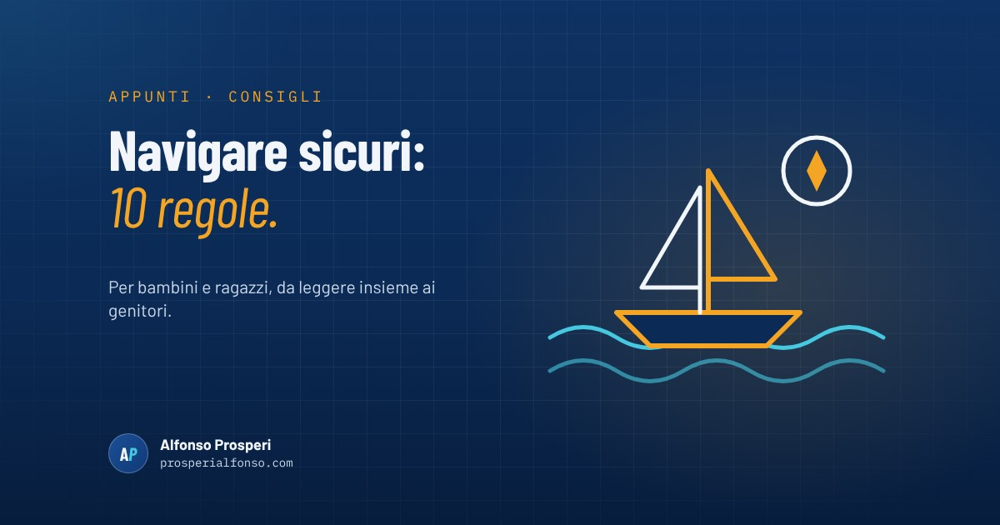

Qualche anno fa avevo condiviso un opuscolo per ragazzi con Geronimo Stilton, che spiegava le regole per usare Internet come se fosse una navigazione in mare. L'idea è ancora valida, e oggi i bambini hanno in mano uno smartphone sempre più presto. Ecco le dieci regole, riscritte in parole semplici, da leggere insieme.
Le 10 regole d'oro
- Occhio alle secche. Non tutti i siti sono adatti a te. Se trovi qualcosa che ti mette a disagio, chiudi e parlane con un adulto.
- Attento alle chiavi. Le password sono le chiavi di casa tua: non si danno a nessuno, nemmeno al migliore amico.
- Attenti ai pacchi. Allegati, link e premi "che hai vinto" possono nascondere brutte sorprese. Non aprirli senza chiedere.
- Niente foto agli sconosciuti. Una foto, una volta inviata, non torna più indietro.
- Acqua in bocca con gli sconosciuti. Nome, indirizzo, scuola e numero di telefono restano tuoi.
- Attento alle pantegane. Online qualcuno può fingersi un coetaneo. Se una persona ti fa troppi complimenti o ti chiede segreti, avvisa un adulto.
- Ci incontriamo? No, grazie. Mai incontrare dal vivo chi conosci solo online, senza i genitori.
- Non confondere squali e sardine. Non tutto quello che leggi è vero: chiedi, controlla, confronta.
- Alla larga dai maleducati. Se qualcuno ti offende o prende in giro te o un amico, non rispondere: salva tutto e dillo a un adulto. Il cyberbullismo si ferma parlandone.
- Occhio al portafoglio. Acquisti nei giochi, abbonamenti e app a pagamento: sempre con il permesso dei genitori.
Per i genitori
- Parlatene spesso, senza fare la predica: la regola più importante è che vostro figlio sappia di poter venire da voi se succede qualcosa, senza paura di essere punito.
- Usate gli strumenti di controllo adatti all'età: tempo di utilizzo, app consentite, filtri. Li trovate spiegati nella guida al parental control.
- Date l'esempio: anche il telefono dei grandi resta fuori dalla tavola.
Per consigli e materiali per famiglie e scuole c'è il sito Generazioni Connesse. In caso di problemi seri si può contattare la Polizia Postale tramite il Commissariato di Polizia Online.